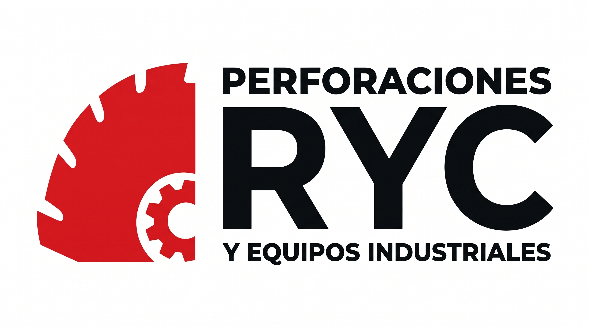

Especialistas en Intervención de Estructuras Complejas
En Perforaciones RyCortes entregamos soluciones de ingeniería en terreno orientadas a la modificación, corte, perforación y desmantelamiento de estructuras de hormigón fuertemente armado, roca y componentes metálicos de gran tonelaje. Nuestro negocio se basa en reemplazar los métodos destructivos o térmicos tradicionales por tecnología diamantada de precisión milimétrica.
A diferencia de la demolición por impacto o el oxicorte, nuestros procedimientos eliminan las microfisuras en la estructura remanente, reducen drásticamente la contaminación acústica y de polvo, y permiten trabajar dentro de plantas industriales operativas, fundiciones mineras, hospitales y edificios en funcionamiento sin detener sus procesos críticos.

1. Catálogo Detallado de Tipos de Corte y Perforación
Seleccionamos la técnica exacta según la geometría de la pieza, la densidad de la enfierradura, el espesor del material y las condiciones de acceso en faena:
Uso principal: No tiene límite práctico de espesor ni profundidad. Es el método definitivo para cortar grandes fundaciones de máquinas, pilotes, vigas de puentes, muros masivos, bloques de roca y elementos de cobre en fundiciones (fondos de olla, carga fría y acreciones).
Uso principal: Apertura exacta de vanos para puertas, ventanas, ductos de ventilación, cajas de ascensores y rebajes de muros de contención. Deja un acabado completamente liso que no requiere reparaciones posteriores.
Uso principal: Corte de losas de hormigón armado en naves industriales, apertura de zanjas para canalizaciones subterráneas, juntas de dilatación, remoción de radieres dañados y pistas de alto tráfico.
Uso principal: Pasadas milimétricas verticales, horizontales o en ángulo para matrices de agua, redes contra incendios, bandejas eléctricas, climatización (HVAC), extracción de muestras de laboratorio y perforaciones profundas para pernos de anclaje.
Uso principal: Intervenciones donde no es posible instalar rieles pesados, permitiendo cortes al ras de piso o muro y terminaciones exactas en esquinas sin sobre-corte (overcut).
Uso principal: Desmantelamiento rápido y limpio de bases de chancadores, puentes, losas superiores y estructuras críticas sin generar escombros descontrolados ni vibraciones.
2. Nuestro Parque de Maquinarias y Equipamiento
Contamos con tecnología robusta y mantenida bajo estrictos protocolos para garantizar continuidad operacional en terreno, incluso en faenas de régimen 24/7:
Unidades de Hilo Diamantado
Máquinas eléctricas e hidráulicas de alta potencia con sistemas de poleas direccionales adaptables a geometrías complejas, espacios reducidos o cortes sumergidos. Permiten operar a distancia mediante mando remoto, manteniendo al operador fuera de la línea de fuego.
Cabezales Murales sobre Riel
Sistemas de corte mural de alta frecuencia y potencia hidráulica capaces de montar discos diamantados para cortar hormigón con enfierradura densa de gran diámetro, logrando cortes rectos en vertical, horizontal o invertido.
Perforadoras Testigueras Calibradas
Pedestales de perforación anclados por vacío o perno expansivo, equipados con motores de múltiples velocidades y brocas coronas diamantadas para perforar desde pequeños diámetros técnicos hasta grandes pasadas industriales.
Equipos de Demolición y Apoyo
Cortadoras de pavimento, equipos manuales de corte profundo, sistemas de aspiración y control de lodos (agua con sedimento de corte), generadores autónomos y herramientas de quiebre controlado mediante cuñas o cilindros hidráulicos.
3. Protocolo de Trabajo de Principio a Fin
Cada proyecto que asume Perforaciones RyCortes se ejecuta bajo una metodología estructurada en cuatro etapas para asegurar cero improvisaciones en faena: